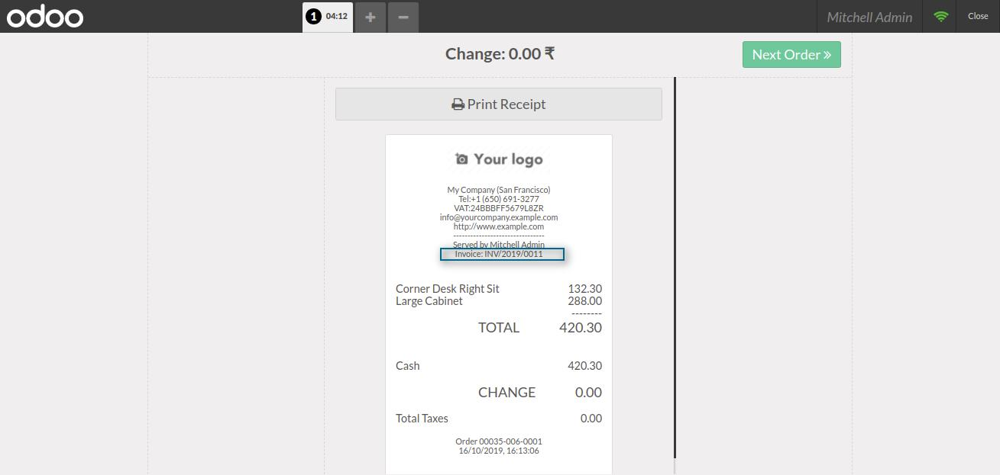

POS Invoice On Receipt
Problems Addressed By The Module
Invoice On Receipt
Time Saving
User can get the invoice on the receipt without even printing it separately.
Time Saving
Saves the time of the seller at a greater extent. As he doesn't need to give the invoice separately to their customers.

Invoice On PosTicket
